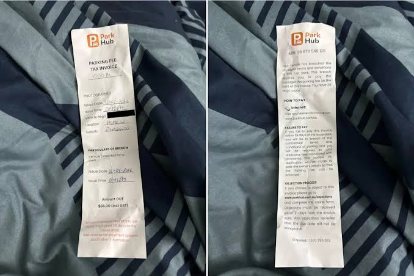

>
Back home paying off tickets
Made by Sara Salcedo
Someone reaches down to help but grabs notebook𝑷𝒂𝒕𝒓𝒊𝒄𝒊𝒂 𝒄𝒂𝒏 𝒆𝒂𝒔𝒊𝒍𝒚 𝒑𝒂𝒚 𝒉𝒆𝒓 𝒑𝒂𝒓𝒌𝒊𝒏𝒈 𝒐𝒓 𝒕𝒓𝒂𝒇𝒇𝒊𝒄 𝒕𝒊𝒄𝒌𝒆𝒕𝒔 𝒇𝒓𝒐𝒎 𝒕𝒉𝒆 𝒄𝒐𝒎𝒇𝒐𝒓𝒕 𝒐𝒇 𝒉𝒆𝒓 𝒉𝒐𝒎𝒆 𝒖𝒔𝒊𝒏𝒈 𝒔𝒆𝒗𝒆𝒓𝒂𝒍 𝒄𝒐𝒏𝒗𝒆𝒏𝒊𝒆𝒏𝒕 𝒐𝒏𝒍𝒊𝒏𝒆 𝒎𝒆𝒕𝒉𝒐𝒅𝒔. 𝑰𝒏𝒔𝒕𝒆𝒂𝒅 𝒐𝒇 𝒘𝒂𝒊𝒕𝒊𝒏𝒈 𝒊𝒏 𝒍𝒐𝒏𝒈 𝒍𝒊𝒏𝒆𝒔 𝒂𝒕 𝒂 𝒄𝒐𝒖𝒓𝒕𝒉𝒐𝒖𝒔𝒆 𝒐𝒓 𝒈𝒐𝒗𝒆𝒓𝒏𝒎𝒆𝒏𝒕 𝒐𝒇𝒇𝒊𝒄𝒆, 𝒔𝒉𝒆 𝒄𝒂𝒏 𝒔𝒊𝒎𝒑𝒍𝒚 𝒍𝒐𝒈 𝒐𝒏𝒕𝒐 𝒉𝒆𝒓 𝒄𝒊𝒕𝒚 𝒐𝒓 𝒔𝒕𝒂𝒕𝒆'𝒔 𝒐𝒇𝒇𝒊𝒄𝒊𝒂𝒍 𝒎𝒖𝒏𝒊𝒄𝒊𝒑𝒂𝒍 𝒑𝒐𝒓𝒕𝒂𝒍, 𝒆𝒏𝒕𝒆𝒓 𝒉𝒆𝒓 𝒕𝒊𝒄𝒌𝒆𝒕 𝒐𝒓 𝒍𝒊𝒄𝒆𝒏𝒔𝒆 𝒑𝒍𝒂𝒕𝒆 𝒏𝒖𝒎𝒃𝒆𝒓, 𝒂𝒏𝒅 𝒔𝒆𝒄𝒖𝒓𝒆𝒍𝒚 𝒄𝒐𝒎𝒑𝒍𝒆𝒕𝒆 𝒕𝒉𝒆 𝒑𝒂𝒚𝒎𝒆𝒏𝒕 𝒖𝒔𝒊𝒏𝒈 𝒂 𝒄𝒓𝒆𝒅𝒊𝒕 𝒄𝒂𝒓𝒅, 𝒅𝒆𝒃𝒊𝒕 𝒄𝒂𝒓𝒅, 𝒐𝒓 𝒆𝒍𝒆𝒄𝒕𝒓𝒐𝒏𝒊𝒄 𝒄𝒉𝒆𝒄𝒌. 𝑰𝒇 𝒔𝒉𝒆 𝒑𝒓𝒆𝒇𝒆𝒓𝒔 𝒏𝒐𝒕 𝒕𝒐 𝒖𝒔𝒆 𝒂 𝒘𝒆𝒃𝒔𝒊𝒕𝒆, 𝒔𝒉𝒆 𝒄𝒂𝒏 𝒂𝒍𝒔𝒐 𝒓𝒆𝒔𝒐𝒍𝒗𝒆 𝒕𝒉𝒆 𝒇𝒊𝒏𝒆𝒔 𝒃𝒚 𝒄𝒂𝒍𝒍𝒊𝒏𝒈 𝒕𝒉𝒆 𝒂𝒖𝒕𝒐𝒎𝒂𝒕𝒆𝒅 𝒑𝒉𝒐𝒏𝒆 𝒑𝒂𝒚𝒎𝒆𝒏𝒕 𝒔𝒚𝒔𝒕𝒆𝒎 𝒑𝒓𝒐𝒗𝒊𝒅𝒆𝒅 𝒐𝒏 𝒕𝒉𝒆 𝒕𝒊𝒄𝒌𝒆𝒕 𝒃𝒂𝒄𝒌, 𝒐𝒓 𝒃𝒚 𝒘𝒓𝒊𝒕𝒊𝒏𝒈 𝒂 𝒄𝒉𝒆𝒄𝒌 𝒂𝒏𝒅 𝒎𝒂𝒊𝒍𝒊𝒏𝒈 𝒊𝒕 𝒖𝒔𝒊𝒏𝒈 𝒕𝒉𝒆 𝒑𝒓𝒆-𝒂𝒅𝒅𝒓𝒆𝒔𝒔𝒆𝒅 𝒆𝒏𝒗𝒆𝒍𝒐𝒑𝒆. 𝑯𝒂𝒏𝒅𝒍𝒊𝒏𝒈 𝒕𝒉𝒊𝒔 𝒄𝒉𝒐𝒓𝒆 𝒂𝒕 𝒉𝒐𝒎𝒆 𝒏𝒐𝒕 𝒐𝒏𝒍𝒚 𝒔𝒂𝒗𝒆𝒔 𝑷𝒂𝒕𝒓𝒊𝒄𝒊𝒂 𝒗𝒂𝒍𝒖𝒂𝒃𝒍𝒆 𝒕𝒊𝒎𝒆 𝒂𝒏𝒅 𝒕𝒓𝒂𝒗𝒆𝒍 𝒆𝒙𝒑𝒆𝒏𝒔𝒆𝒔, 𝒃𝒖𝒕 𝒊𝒕 𝒂𝒍𝒔𝒐 𝒆𝒏𝒔𝒖𝒓𝒆𝒔 𝒔𝒉𝒆 𝒂𝒗𝒐𝒊𝒅𝒔 𝒄𝒐𝒔𝒕𝒍𝒚 𝒍𝒂𝒕𝒆 𝒇𝒆𝒆𝒔 𝒃𝒚 𝒉𝒆𝒍𝒑𝒊𝒏𝒈 𝒉𝒆𝒓 𝒎𝒆𝒆𝒕 𝒕𝒉𝒆 𝒑𝒂𝒚𝒎𝒆𝒏𝒕 𝒅𝒆𝒂𝒅𝒍𝒊𝒏𝒆 𝒑𝒓𝒐𝒎𝒑𝒕𝒍𝒚.

Exit